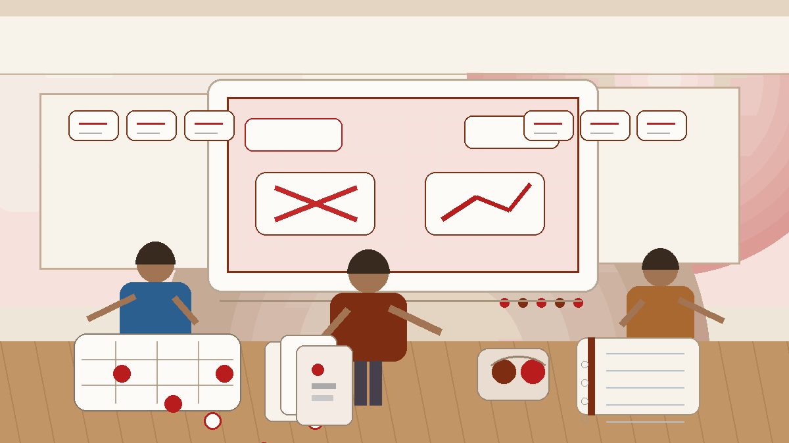
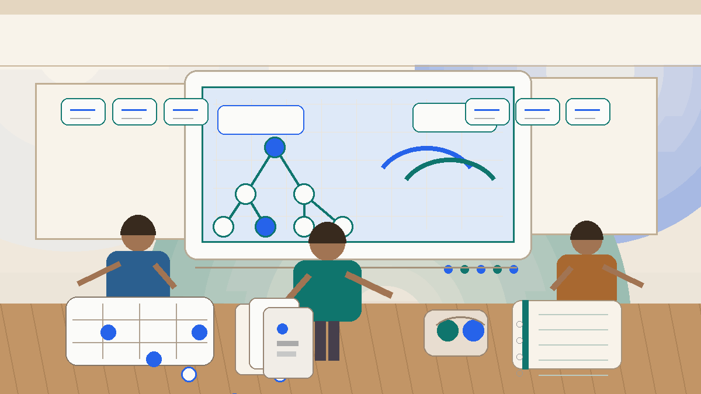
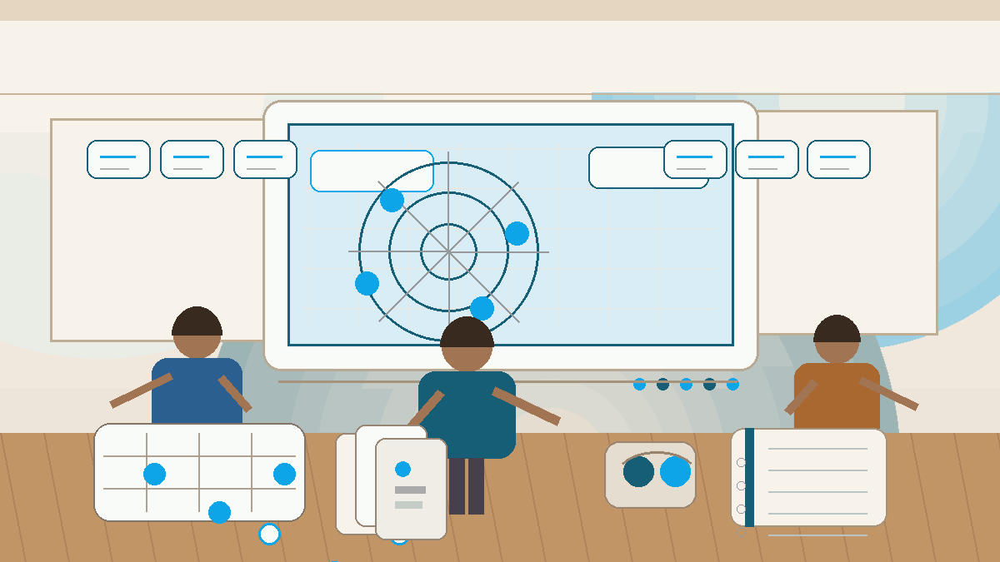
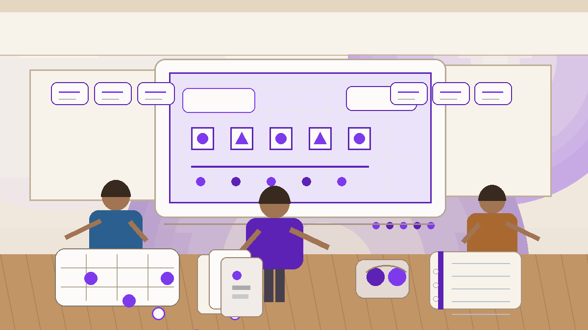

Introduction
Desi Game Strategy is designed for readers who want practical strategic ideas that carry across classic regional games. It brings the core topics into one clear structure so readers can move from foundations to deeper strategy without losing sight of practical play.
Traditional South Asian games often look simple at first, but they reward memory, timing, and social reading. This overview explains how the site is organized, what each section is trying to teach, and how to study the material in a steady, realistic order.
The aim is not just to cover keywords related to desi game strategy. It is to make the site easier to read, easier to navigate, and more useful for people who want practical explanations instead of thin summaries.
Site Overview
What Is Desi Game Strategy?
Desi Game Strategy is a repository-based educational guide focused on traditional South Asian games. It organizes practical strategy topics into a structure that is beginner-friendly, consistent, and still useful for readers who already have some experience. The purpose of the site is to make strong decision habits easier to learn, not to present strategy as a collection of disconnected shortcuts.
This homepage is intentionally built as a gateway for later pages. Each topic block below points toward a dedicated article path, so the site can grow into a fuller learning archive without losing clarity at the top level.
1. Learn Through a Clear Path
Readers get the most value when they move through the material in sequence. Start with fundamentals, then move into common mistakes and decision making, and only after that spend more time on awareness, pattern recognition, and advanced concepts.
This keeps the site friendly for human readers while also making the information architecture stronger for search. Each page has a distinct job, but the homepage shows how those jobs connect.
🧠 2. Keep Strategy Practical
A serious game education site should explain why a move or habit matters, not just describe it. That is why the learning path below focuses on trade-offs, pattern reading, table rhythm, and how to turn observation into better decisions.
The topic pages are designed to be useful whether a reader is learning from scratch or returning after a few sessions with sharper questions.
🧠 3. Leave Room for Future Pages
This homepage already includes entry points for the next layer of the project. As more HTML pages are built, the structure will not need to be reinvented. The topical doorways are already here, so the site can expand without losing consistency.
Topic Guides
These topic cards act as the homepage entry points for the rest of the repository. For now they lead to the current Markdown sources, and they can later be switched to dedicated HTML pages without changing the homepage structure.

Desi Game Fundamentals and Core Strategy
Start here for the base layer: objectives, turn rhythm, position reading, and the habits that support stronger play later on.
Open article ->
Desi Game Common Mistakes
A practical guide to the repeated errors that make strategy look worse than it is, and how to replace those habits with steadier defaults.
Open article ->
Desi Game Decision Making
Learn how to identify the real question, compare options, and choose lines that remain strong even when the information is incomplete.
Open article ->
Desi Game Game Awareness
Understand how to read the wider position, notice shifting pressure, and avoid focusing too narrowly on your own immediate plan.
Open article ->
Desi Game Pattern Recognition
Explore how recurring choices, tempo changes, and repeated table habits can narrow the next decision without creating false certainty.
Open article ->Desi Game Play Styles
Study how different styles create different pressures, and why a good response is usually a measured adjustment instead of a dramatic counter.
Open article ->
Desi Game Risk Balance
Compare safe lines and sharp lines more honestly, and learn how to judge risk by position rather than by emotion.
Open article ->Desi Game Scenarios
Use realistic scenarios to connect ideas with actual situations, so strategic advice becomes easier to picture and easier to reuse.
Open article ->Desi Game Strategic Thinking
Move beyond immediate responses and learn how to connect this turn's choice to the shape of the next position.
Open article ->Desi Game Advanced Concepts
A deeper layer for readers who already understand the basics and want to think more carefully about disguise, tempo, adaptation, and marginal edges.
Open article ->Common Mistakes
- Building a homepage that only summarizes the project and gives readers nowhere to go next.
- Treating SEO structure as separate from user navigation instead of letting them support each other.
- Using abstract visuals that do not match the real teaching purpose of the site.
- Grouping all topics together without explaining why a reader should start with one page first.
Summary
This homepage gives Desi Game Strategy a clearer front door: a richer teaching image, a stronger explanation of the site's purpose, and visible entry points for all later topic pages. That makes the page more useful for search, but more importantly, more useful for human readers who want to know where to begin and where to go next.
External Reference
https://market-lab-cmd.github.io/desi-game-strategy/
SEO Keywords
desi game strategy
traditional Indian games
South Asian game guide
game strategy basics
strategic gameplay